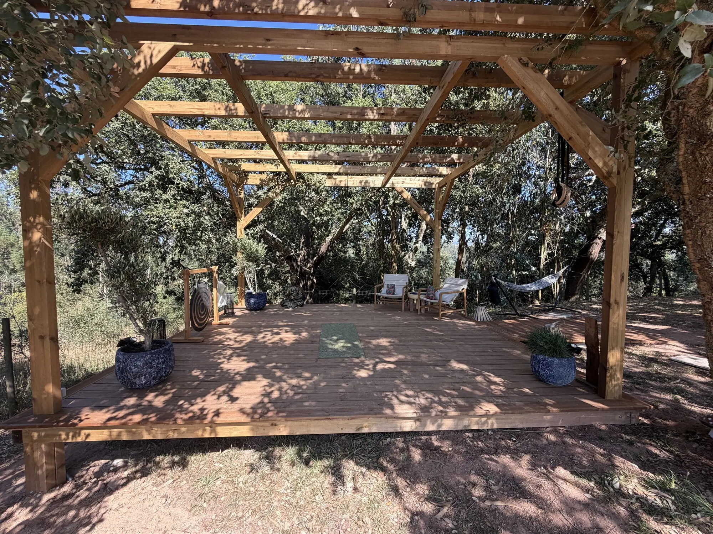
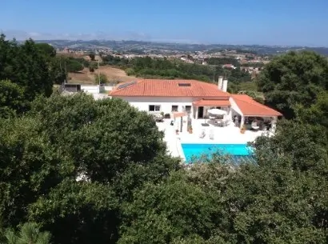
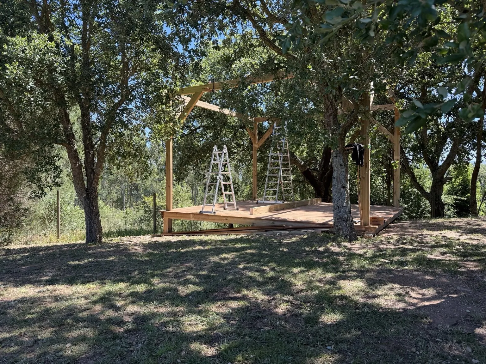
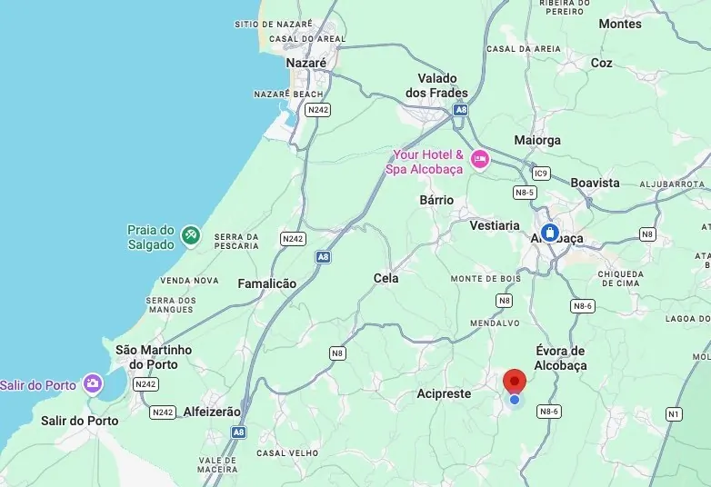
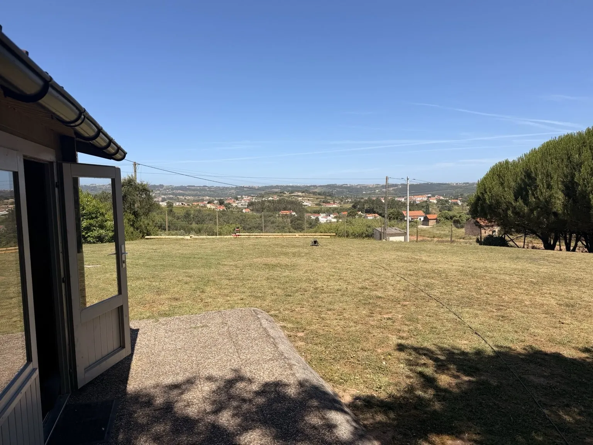
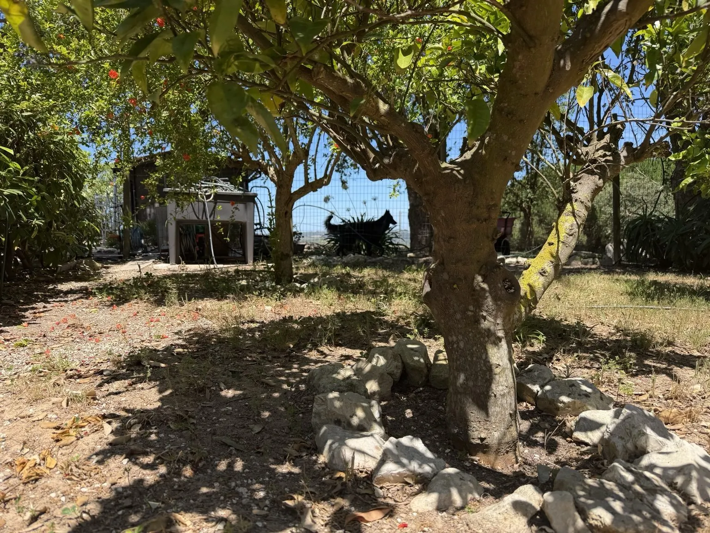

The Vision
A future space where people can pause, reflect and begin to find their bearings.
The Pathfinder Project
A trauma-informed outdoor therapeutic environment near Alcobaça, Portugal — created to support reflection, reconnection, recovery and carefully planned therapeutic work.
Project milestone
Our woodland therapeutic platform has now been completed and is ready for carefully planned therapeutic, reflective and community activities.
Participation in therapeutic activities will be subject to appropriate assessment, consent, safeguarding and clinical suitability.
Read the latest project updateCurrent status: Operational
Mission becoming reality
The Pathfinder Project is developing a trauma-informed outdoor therapeutic environment near Alcobaça, Portugal. Created within a peaceful woodland setting, the project is intended to support reflection, reconnection, recovery and carefully planned therapeutic work.
The first major phase is now complete. Our outdoor therapeutic platform is operational, providing a calm and adaptable space for future individual, group and community activities.
The project grew from the belief that healing and growth are not always confined to a therapy room. Nature, movement, reflection, community and therapeutic support can all help people rediscover direction when the path ahead feels uncertain.

July 2026
Set within the woodland landscape near Alcobaça, the completed timber platform provides a calm and private environment for reflection, therapeutic work, small-group activities and restorative time in nature.
Read the latest project update →Visual story
A future space where people can pause, reflect and begin to find their bearings.

Located near Alcobaça, Nazaré and São Martinho do Porto, between coast and countryside.
Woodland, shade and open space create opportunities for quiet reflection and connection with nature.

The first outdoor gathering space took shape beneath mature trees.
Like a cairn marking a route across difficult terrain, Pathfinder exists to help people find direction.
Project journey
Creating a space aligned with Pathfinder's values: safety, recovery, resilience and meaningful human connection.
Developing the environment and building the timber platform and pergola beneath the woodland canopy.
— The timber platform and pergola have been completed and the outdoor environment is ready for planned therapeutic and community use.
Refining the environment and developing safe, clinically appropriate programmes. Future activity will be announced as it becomes available.
Project Journal
The Pathfinder Project has reached an important milestone: our outdoor therapeutic space is now operational.
Set within the woodland landscape near Alcobaça, the completed timber platform provides a calm and private environment for reflection, therapeutic work, small-group activities and restorative time in nature.
The space includes sheltered seating, areas for mindful movement and grounding, a therapeutic gong and quiet places to pause away from the pressures of everyday life.
This marks the transition from construction into active use. The next stage of the project will focus on refining the environment, developing safe and clinically appropriate programmes, and ensuring the space supports the needs of veterans, members of the Armed Forces community and others affected by trauma.
Participation in therapeutic activities will be subject to appropriate assessment, consent, safeguarding and clinical suitability.
Construction began on the first outdoor gathering space beneath the mature trees. This area was intended to support future wellbeing activities, workshops, reflection and community events as the project develops.



Looking ahead
Future activity may include reflective workshops, peer support programmes, resilience and recovery events, outdoor wellbeing experiences and nature-informed therapeutic programmes. Pathfinder will develop this carefully, ethically and at a pace that protects clinical quality and participant safety.
Programmes are not yet open for booking. Participation, when available, will be subject to appropriate assessment, consent, safeguarding and clinical suitability. The outdoor space is not a crisis service, hospital or residential treatment facility.
Impact reporting
Our foundation impact report brings together Pathfinder's mission, Armed Forces Covenant commitment, veteran leadership, community support and The Pathfinder Project.
Follow progress as the Pathfinder Project develops, or get in touch about partnership and community interest opportunities.
"You don't stop the waves. You learn how to navigate them."
Just a short distance from the Pathfinder Project lies Nazaré, world-famous for its giant waves and the courage of those who choose to face them. For us, Nazaré represents the challenges many people encounter throughout life — moments that can feel overwhelming, uncertain or impossible to navigate alone.
Pathfinder exists to help people find their bearings when facing those waves and to support them in discovering a path forward.
Adjust the site display to support reading, contrast and comfort.